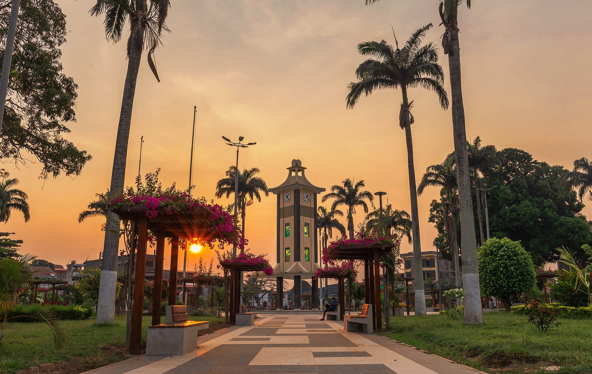
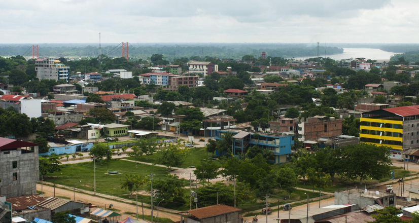
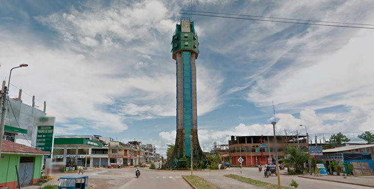

Centro de la Ciudad de Puerto Maldonado: El corazón de la Amazonía peruana
El centro de Puerto Maldonado es el punto de partida para explorar la región de Madre de Dios. Con su vibrante mercado, plazas históricas y una mezcla de culturas amazónicas, es un lugar ideal para conocer la vida local y la gastronomía regional.
Historia
Fundada en 1902, Puerto Maldonado ha sido un centro clave para la exploración y el comercio en la Amazonía. Su desarrollo ha estado ligado a la explotación del caucho, la madera y, más recientemente, el ecoturismo y la conservación ambiental.



Horarios y Ubicación
- Ubicación: Centro de Puerto Maldonado, región de Madre de Dios, Perú.
- Horarios de visita: Acceso libre las 24 horas.
- Costo de entrada: Entrada gratuita.
Consejos para Visitantes
- Explora el mercado local: Prueba frutas exóticas y platos típicos de la Amazonía.
- Visita la Plaza de Armas: Un lugar perfecto para relajarse y observar la vida local.
- Pasea por el Malecón: Disfruta de vistas panorámicas del río Madre de Dios.
- Usa ropa cómoda: El clima es cálido y húmedo, por lo que se recomienda ropa ligera.
- Consulta sobre tours: Desde el centro puedes contratar excursiones a la selva y otras atracciones cercanas.